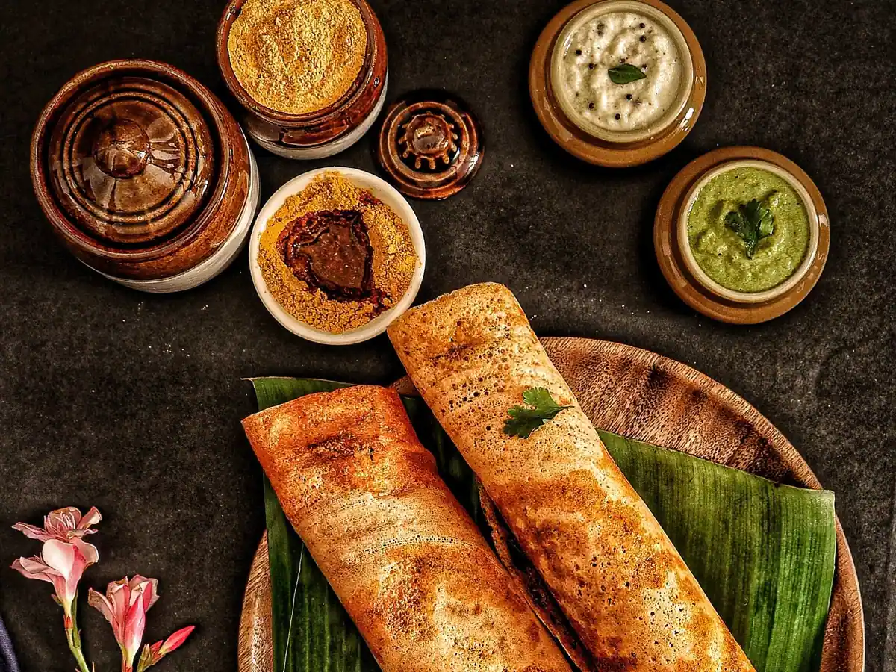
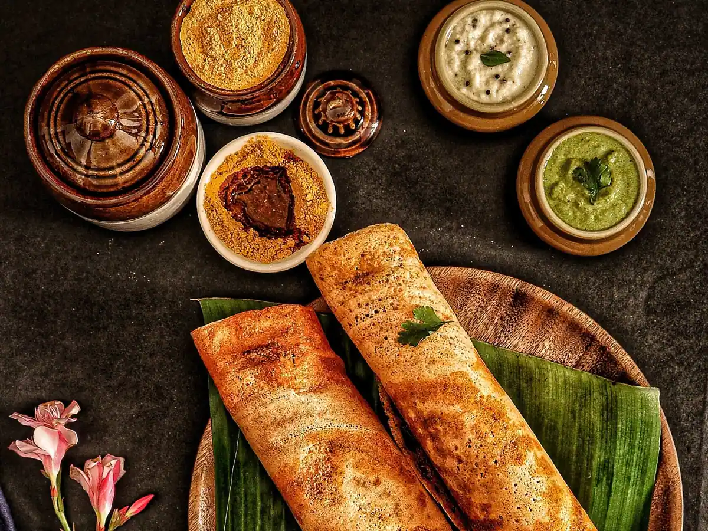

A dosa is a thin (usually crispy) flat bread originating from South India, made from a fermented batter predominantly
consisting of lentils and rice. Its main ingredients are rice and black gram, ground together in a fine, smooth batter
with a dash of salt, then fermented
 
